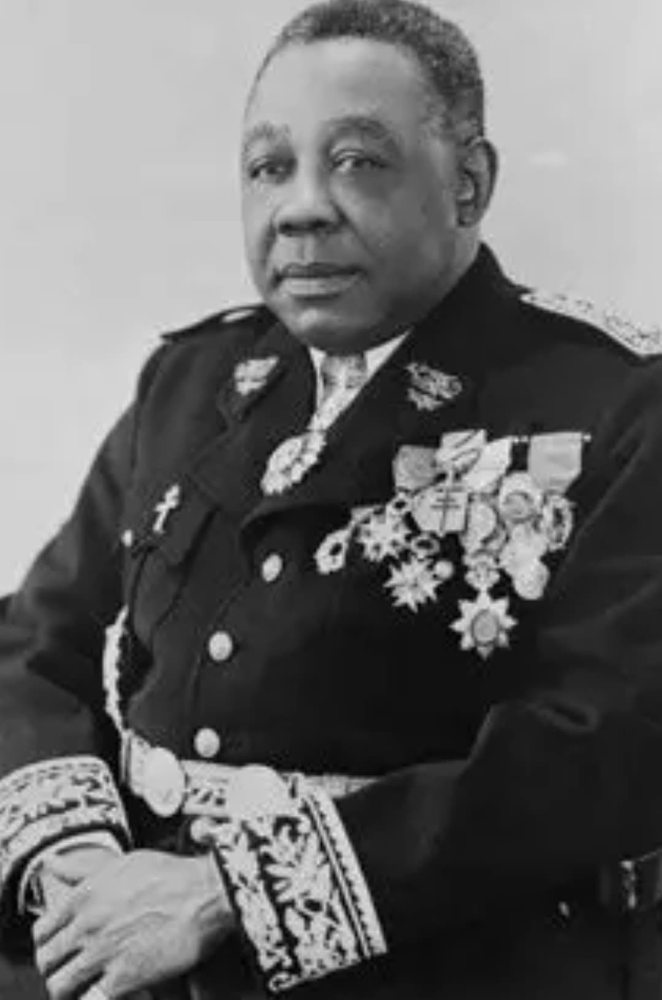

Félix Éboué, Gouverneur général de l’Afrique équatoriale française, portrait officiel (vers 1940).
Nom : Félix Adolphe Éboué
Dates : 26 décembre 1884 – 17 mai 1944
Nationalité : Française (Guyane)
Fonction : Gouverneur général de l’AEF
Félix Éboué est l’une des figures majeures de la France Libre. Haut fonctionnaire d’origine guyanaise, il devient en 1940 le premier gouverneur à se rallier officiellement à l’appel du général de Gaulle, entraînant l’Afrique équatoriale française dans la lutte contre l’Axe.
Son engagement précoce donne à la France Libre une base territoriale essentielle pour poursuivre le combat après la défaite de 1940.
Dès août 1940, Éboué proclame le ralliement de l’AEF à la France Libre. Il organise l’administration, soutient les Forces françaises libres et met en place une politique de réforme visant à moderniser les territoires africains.
Son action contribue à légitimer le mouvement gaulliste sur la scène internationale.
Éboué meurt en 1944, avant la Libération. Il est inhumé au Panthéon en 1949, devenant le premier homme noir à y reposer.
Son nom reste associé au courage politique, à la fidélité à la République et à la lutte contre les régimes totalitaires.